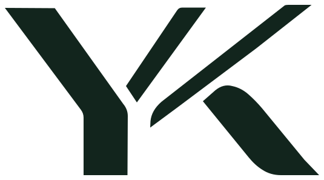

Start with a purpose.
Something useful, something enjoyable, or a better way to do an everyday thing.

We're YK Apps, an independent studio in Istanbul. We build apps that make everyday things more useful, creative and personal.

Product, engineering and marketing, all in one team. We make our own apps and keep improving them with the people who use them.
Something useful, something enjoyable, or a better way to do an everyday thing.
The little details matter. We want our apps to feel considered, not interchangeable.
A launch is a beginning. What people do and tell us helps shape what comes next.